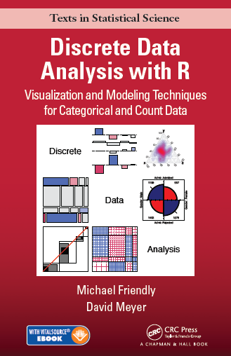
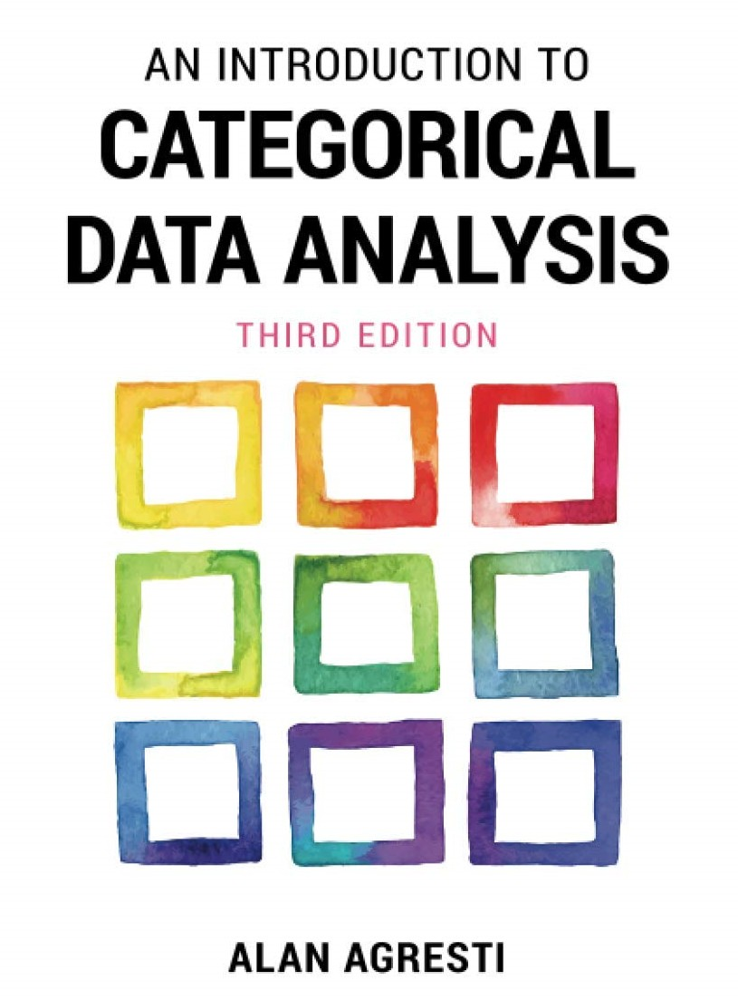
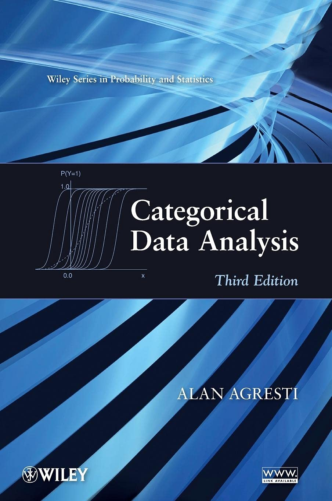
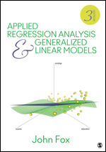

Resources
Books
Main texts
|  |
Friendly & Meyer (2016),
Discrete Data Analysis with R: Visualization and Modeling Techniques for
Categorical and Count Data
. This book provides the syllabus and main content for the course.
Use the code ADC22 for a 30% discount from the publisher's web site.
Web site for the book: http://ddar.datavis.ca/ |
|  |
Alan Agresti (2019),
Introduction to Categorical Data Analysis, 3rd Ed.
. A somewhat parallel book, offering a different perspective on categorical data analysis.
An ebook version is available to students in this course. |
Supplementary readings
|  |
Agresti (2013)
Categorical Data Analysis
. A much more technical book, that many consider the 'bible' for categorical data analysis methods.
Web site for the book http://www.stat.ufl.edu/~aa/cda/cda.html Solutions manual for R https://home.comcast.net/~lthompson221/Splusdiscrete2.pdf A PDF copy of this book is available to students in this course. |
|  | Fox (2015) Applied Regression Analysis and Generalized Linear Models . An excellent text on linear models; Part IV on Generalized Linear Models provides a clear and comprehensive discussion. |
Software
In lectures and lab sessions I will be using R software exclusively, together with the R Studio user interface for R.
You are well-advised to download and install these to your computer so you can follow along.
My install-vcd-pkgs.R R script, to install the most useful packages for this course.
R Studio cheatsheets A handy collection of cheat sheets for R, R Studio and a number of the most useful R packages.
An Introduction to R Graphics Notes from my SCS short course on R Graphics.
Copyright © 2018 Michael Friendly. All rights reserved. || lastModified :
friendly AT yorku DOT ca
 orcid.org/0000-0002-3237-0941
orcid.org/0000-0002-3237-0941